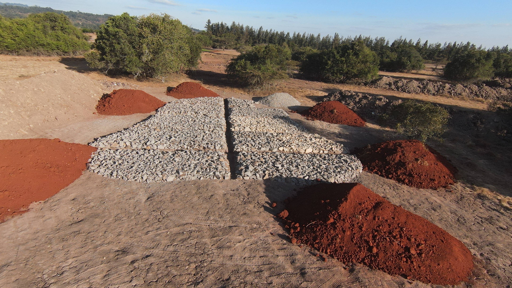
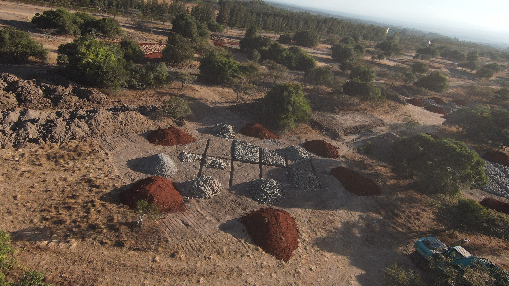
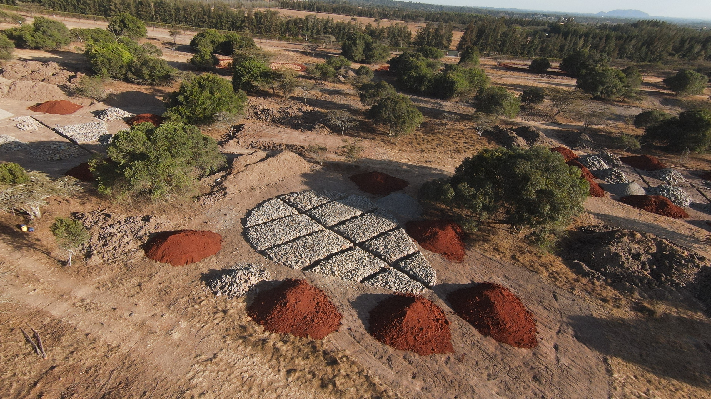
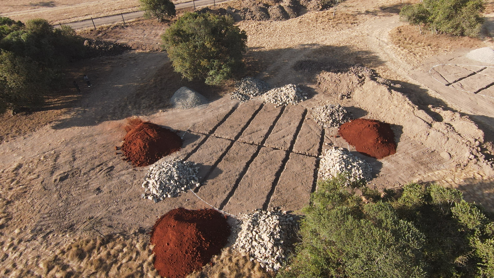
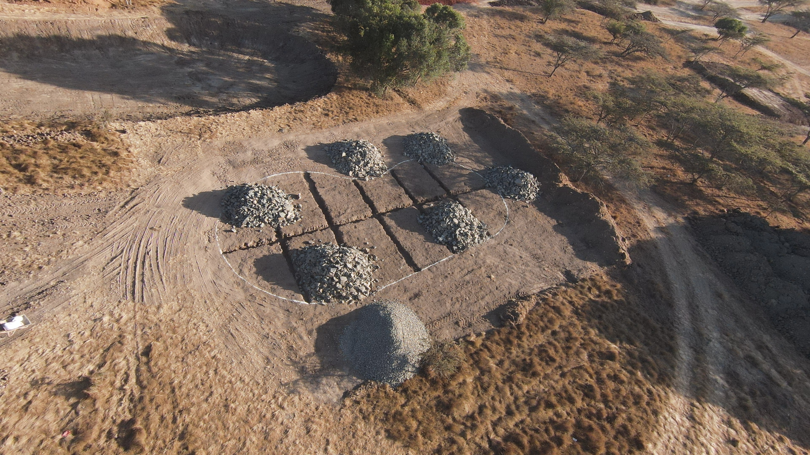
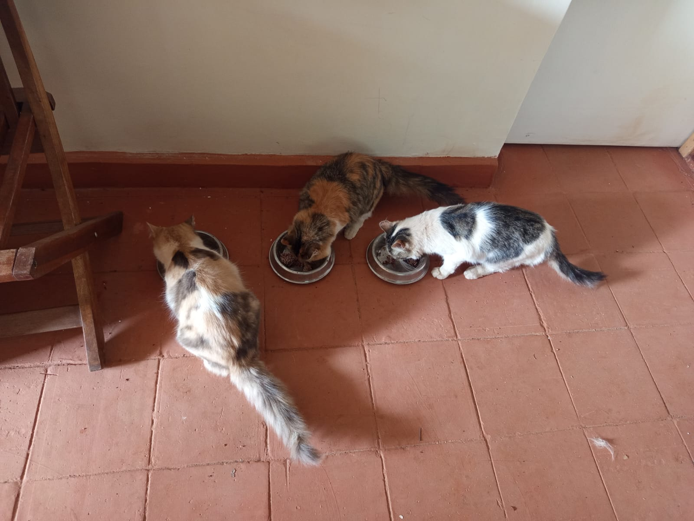

Mucheru World of Golf
Operational shift breakdown and billing utilization for heavy earthmoving equipment on site:
| Equipment Description | Primary Site Operations | Operating Hours | Hourly Rate | Total Cost (KES) |
|---|---|---|---|---|
| Backhoe Loader (XGMA) | Ground levelling & rough grading around Green No. 5 and Green No. 7 corridors, material handling, spoil dispersion | 10.0 hrs | KES 6,500 | KES 65,000 |
| Consolidated Machinery Billing Total | 10.0 hrs | - | KES 65,000 | |
- Ground Levelling Around Greens No. 5 & 7: The Backhoe Loader completed 10.0 continuous operational hours actively levelling, cutting high ground, and grading the undulating terrain surrounding Green No. 5 and Green No. 7.
- Palm Tree Planting Holes Excavation: Manual labor excavated structured planting pits along the boundary fence corridor between Green No. 6 and Teebox No. 7 in preparation for landscape palm tree establishment.
- Green No. 14 Hardcore Rock Sub-Base Arranging: Active site workforce arranged, placed, and hand-packed heavy hardcore foundation rocks into designated quadrants across Green No. 14, establishing uniform sub-base stability around the central drainage channel.
- Bulk Material Deliveries for 2nd Nine Greens: Coordinated comprehensive material haulage delivering tipper loads of crushed hardcore rocks, red topsoil, and stone ballast stockpiled across all green locations on the second nine.
2nd Nine Course Material Distribution & Foundation Milestone
Sub-base rock packing on Green No. 14 and systematic material staging (hardcore stone, red soil, and ballast) across all 2nd nine greens establish major construction momentum for fairway and green developments.

2nd Nine Green Staging & Material Grid (Drone View)
High-resolution aerial survey capturing the demarcated green subgrade with herringbone drainage trench cuts, encircled by delivered stockpiles of red topsoil, hardcore rocks, and ballast stone.

Green No. 14 Hardcore Foundation Placement (Drone View)
Aerial drone orthophoto detailing hand-packed hardcore stone sub-base systematically laid into quadrant beds divided by a central drainage line, flanked by topsoil and ballast stockpiles.

Backhoe Loader Earthmoving (Greens 5 & 7)
Yellow XGMA Backhoe Loader actively cutting down soil ridges and grading the uneven fairway corridor around Greens No. 5 and 7 under Ken and Mr. Gichuhi's supervision.
Graded Fairway Surface & Perimeter Alignment
Evenly graded earth profile and smoothed fairway corridor opening out toward the perimeter fence line and established green turf under clear afternoon skies.

Palm Tree Planting Pits (Green 6 to Teebox 7)
Aerial drone view capturing deep, square planting holes excavated at uniform intervals along the boundary fence corridor between Green No. 6 and Teebox No. 7.

Material Deliveries & Green Subgrade Staging
High-altitude aerial survey documenting delivered stockpiles of rich red topsoil, crushed hardcore rocks, and ballast gravel strategically positioned around the hand-packed green foundation.

2nd Nine Bulk Material Deliveries Overview
Panoramic drone capture showcasing multiple tipper-delivered heaps of red soil, hardcore rocks, and ballast gravel arranged around the green drainage layout on the second nine.

Material Deliveries Around Packed Green Base
Aerial drone photograph detailing bulk deliveries of red topsoil and hardcore stones encircling the structured rock foundation grid across the fairway corridor.

Material Deliveries for Green Drainage & Sub-Base
Overhead drone view showing delivered heaps of red soil, crushed hardcore rocks, and ballast gravel staged around the excavated green drainage trench channels.

Hardcore & Ballast Stone Deliveries
Drone orthophoto capturing tipper-delivered stockpiles of hardcore rock stone and ballast gravel placed inside and adjacent to the demarcated green subgrade outline.
🎥 Mucheru World of Golf — Daily Operations & Earthmoving
Comprehensive field video highlighting today's Backhoe Loader earthmoving, ground levelling around Greens 5 & 7, palm tree hole excavations, and 2nd nine material deliveries.
Chaka Farms
Detailed dairy milking yield recorded strictly in Litres (L), with complete accounting of daily ration deductions and net farm inventory balance:
| Production Stream / Allocation | Morning Yield (L) | Evening Yield (L) | Daily Total Gross (L) | Allocations / Deductions (L) | Net Remaining Balance (L) |
|---|---|---|---|---|---|
| Dairy Cow Milk Production | 4.5 L | 2.5 L | 7.0 L | - | 7.0 L |
| Goat Kids Ration | 0.5 L | 0.5 L | 1.0 L | - 1.0 L | - |
| Gladys Allocation | - | - | 0.5 L | - 0.5 L | - |
| Net Farm Milk Balance Available | 7.0 L Gross | - 1.5 L Deductions | 5.5 L Net | ||
Production Accounting Summary
Total gross dairy production for the day was 7.0 Litres (4.5L Morning + 2.5L Evening). Following deductions of 1.0L for goat kids rations (0.5L morning + 0.5L evening) and 0.5L allocated to Gladys, the net farm dairy inventory balance closed at 5.5 Litres.
- Kennel Manners & Patience Drills: Willy conducted structured behavioral obedience drills focusing on kennel doorway manners, calm waiting, threshold patience, and controlled releases.
- Agility & Greeting Commands: Practiced specialized commands including "Spin" rotations and "Paw" greetings with high responsiveness and positive reinforcement.
- Goat Grazing Socialization & Paddock Walking: Led the canine unit on extensive walking, exercise, and grazing socialization sessions alongside the goat flock, reinforcing calm pack coexistence and non-reactive behavior.
- Compound Cleanliness & Maintenance: Margaret and Monica maintained thorough compound cleanliness, sweeping walkways, clearing garden litter, and ensuring pristine grounds.
⚠️ Canine Unit Incident Note — Poultry Interaction
Incident Logged (Overseen by Willy): During the outdoor walk, Mali attacked and bit a chicken. The chicken died as a result of the bite.
🐕 Kennel Manners & Patience Drills
Recording of Willy conducting kennel patience training, practicing calm waiting at open doorways, spin commands, paw greetings, and disciplined release commands.
🐐 Grazing Socialization & Pack Walking (Part 1)
Field footage documenting farm dogs accompanying the goat herd during grazing, displaying peaceful socialization, steady pace, and livestock neutrality.
🐐 Grazing Socialization & Pack Walking (Part 2)
Extended afternoon footage showing off-leash canine exercise across the farm paddocks alongside grazing goats with excellent handler recall and pack harmony.
Kabete Residence
- Guest House to River Stormwater Drainage Construction: Continued stone-pitched masonry construction of the open surface stormwater drain channel running down the wooded hillside from the Guest house toward the river basin.
- Outdoor Fireplace Rock Breaking & Demolition: Labor crew engaged in heavy manual rock breaking and boulder clearance inside the sunken outdoor fireplace pit, demolishing redundant rock strata to reshape the lounge area.
- Damaged Irrigation Pipe Repair: Excavated and exposed a cracked subsurface irrigation pipe line in the red soil trench; successfully installed a durable high-pressure compression coupling fitting to fully restore water flow without leaks.
Irrigation Water Line Successfully Restored
Plumbing repair on the damaged compound irrigation line was completed and pressure-tested, restoring full water delivery to the residence garden irrigation network.
- Cold Room Interior Painting: Applied fresh coats of white protective gloss paint across the interior walls and ceiling of the cold room, upgrading room hygiene and illumination.
- Wooden Chair Sanding & Preparation: Thoroughly sanded down the wooden frames of folding armchairs and stools to remove old weathered finish and prepare a smooth grain base.
- Chair Varnishing & Curing: Applied premium dark mahogany protective varnish across all sanded folding chairs and canvas camp stools, enhancing wood protection and aesthetic luster.
- Domestic Pets Care & Feeding: Provided daily feeding, fresh water, and wellness care for resident pets including Ajabu the Golden Retriever and resident cats (Aiko & Reo).

Guest House to River Drainage Masonry
Mason laying stone blocks and applying cement mortar along the hillside open drainage channel directing stormwater from the Guest house down to the river.

Outdoor Fireplace Rock Breaking
Excavation team utilizing pickaxes and shovels inside the sunken fireplace bowl, breaking out massive stone boulders and clearing rubble.

Fireplace Demolition Rubble Removal
Stockpile of broken rock boulders extracted from the outdoor fireplace bowl during site reshaping and demolition operations.

Exposing Damaged Irrigation Pipe
Excavated red soil trench exposing the fractured black irrigation pipe line prior to fitting replacement compression couplings.

Completed Irrigation Pipe Repair
Repaired underground irrigation line fitted with a heavy-duty blue compression coupling connector, fully restoring pressure and garden water flow.

Cold Room Interior Wall Painting
Painter in red overalls on a stepladder applying clean white gloss paint to the cold room interior walls alongside newly installed storage racks.

Wooden Folding Chair Sanding
Craftsman meticulously sanding down folding armchair timber frames on protective cardboard to achieve a smooth foundation for varnishing.

Varnish Application on Sanded Chairs
Artisan brushing rich dark protective varnish onto sanded wooden folding armchairs in the shaded garden area outside the cold room.

Varnished Armchairs Surface Gloss
Close-up view of restored folding armchairs displaying a deep, protective dark mahogany sheen while curing outdoors.

Restored Chairs & Canvas Stools Suite
Complete set of four folding armchairs and two matching canvas folding stools fully sanded, varnished, and staged in the garden.

Resident Pet Care — Ajabu
Ajabu the Golden Retriever enjoying his daily meal from a feeding bowl on the terracotta-tiled patio at Kabete Residence.

Resident Pet Care — Cats (Aiko & Reo)
Resident domestic cats feeding calmly side by side from stainless steel bowls along the tiled residential corridor.